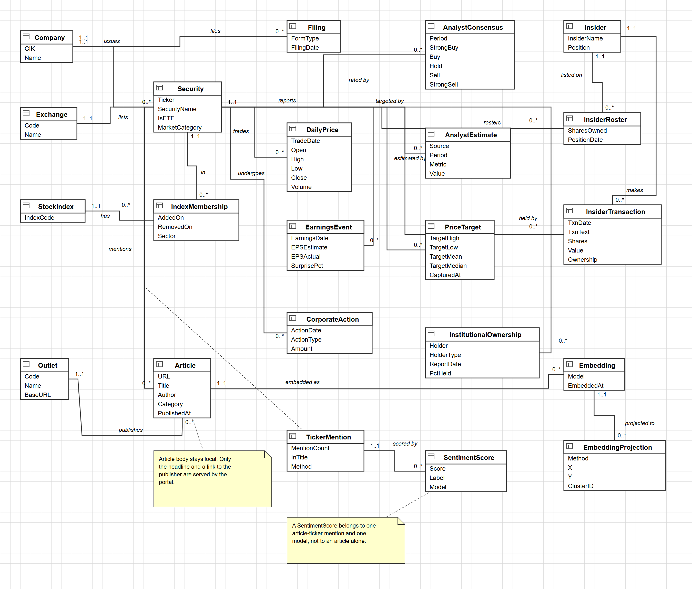
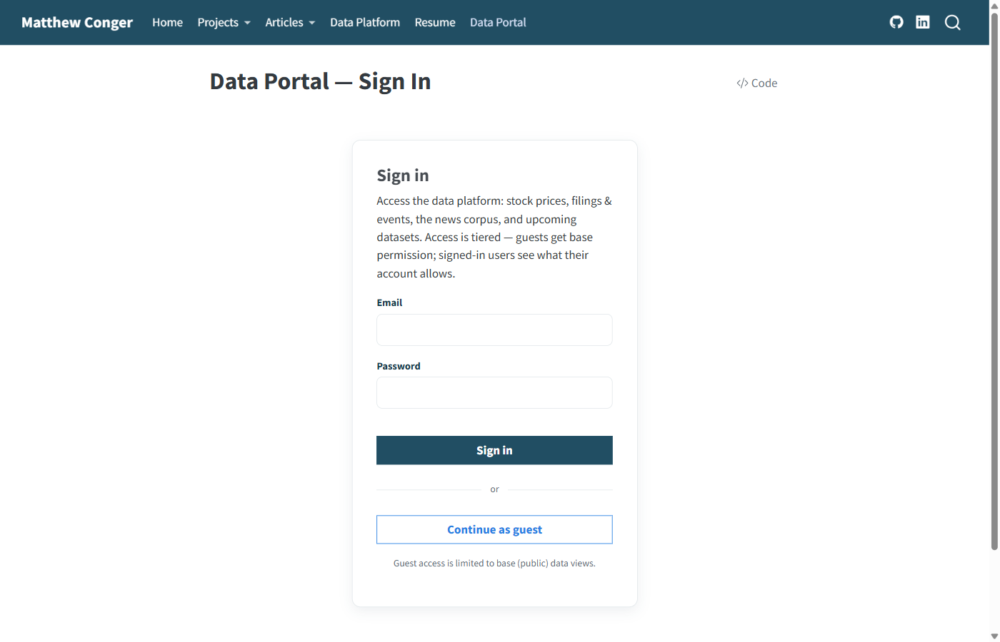
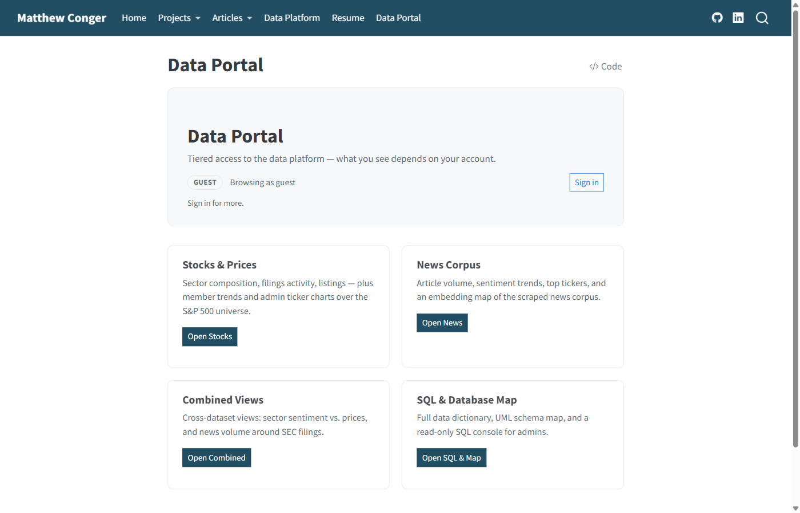
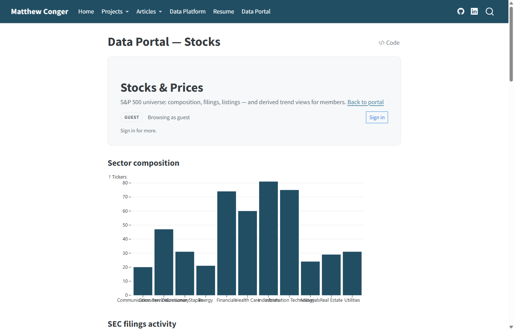
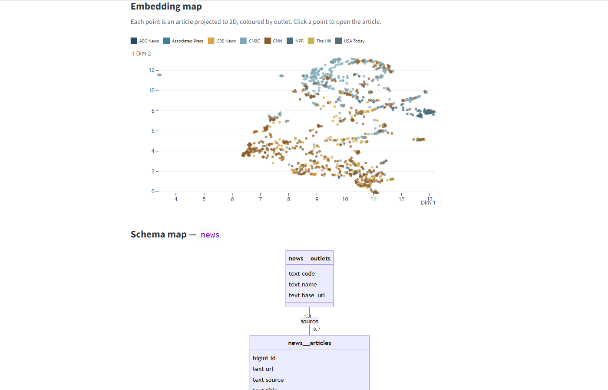
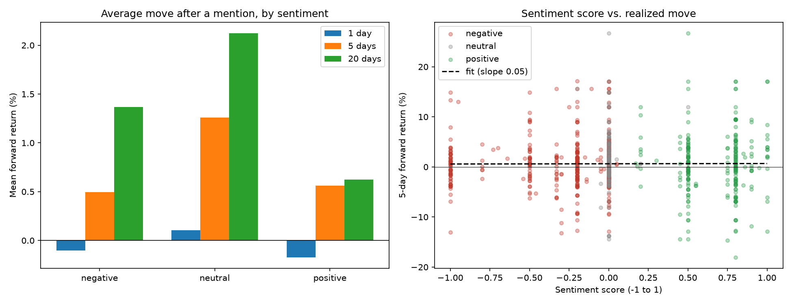

A Permission-Aware Market & News Data Portal
I designed and built a PostgreSQL-backed data portal that serves stock-market and financial-news data to three tiers of users — anonymous guests, signed-in members, and admins — with what each user sees enforced inside the database itself. The database runs on Supabase, and the interface is a static site with live charts, an interactive article map, a personal watchlist, and a read-only SQL console.
- Role: sole designer/developer (schema, backend functions, frontend)
- Tools: PostgreSQL on Supabase (tables, views, SECURITY DEFINER functions, Supabase Auth), Quarto + GitHub Pages for the site, supabase-js for auth and RPC calls, D3 + Observable Plot for charts, Mermaid for the live schema map, Devin (AI pair programmer) for implementation help, Google Colab for the analysis notebook
- Live application: congerm.github.io/login.html
The Problem
This project grew out of a personal process I actually run: investment research. I collect market data (prices, filings, earnings, analyst ratings, insider transactions) and a corpus of scraped financial-news articles that I enrich with ticker mentions, sentiment scores, and embeddings. Until now the data only lived in a warehouse I could reach from my own machines — useful to me, invisible to everyone else, and impossible to share safely.
That sharing problem turned out to be the interesting one:
- Mixed licensing. Some sources are public (SEC filings, Wikipedia’s S&P 500 list, exchange symbol directories, my own derived data), but the market data vendors I use license their data for personal use only. I can show trends computed from that data — I cannot hand out the raw numbers.
- Mixed audiences. A recruiter or classmate browsing my site is a guest; a signed-in member should see more; I (the admin) need everything. One static page can’t serve all three without somewhere to enforce the rules.
- No editing surface. Members had no way to interact with the data — no way to keep a list of tickers they care about or shape their own view.
The domain therefore has two parts: securities and everything recorded about them, and articles and everything derived from them. Access control is a real requirement of the app, but accounts and permissions are application plumbing — they live outside the domain model.
Users
- Guest — no account; explores public data (index composition, filings activity, headlines, sentiment aggregates, the article map).
- Member — signed in; additionally sees derived trends computed from licensed data (rebased sector price indexes, earnings beat rates, analyst mix, insider direction, sentiment-vs-move statistics) and keeps a personal watchlist.
- Admin — me; additionally reads raw rows (full OHLCV series, article detail with model rationales) and runs read-only SQL against the warehouse.
Analysis and Design
Domain description
A Security is issued by a Company and listed on an Exchange. Each security accumulates daily prices, earnings events, corporate actions, analyst estimates/consensus/price targets, institutional ownership, and insider activity. Membership in a stock index changes over time, so IndexMembership records when a security was added and removed and which sector it belongs to.
An Outlet publishes Articles. An article can mention many securities and a security can appear in many articles, so TickerMention is an association class carrying how often the ticker appeared, whether it was in the headline, and how it was found. Each mention is scored by models (SentimentScore), and each article can hold Embeddings reduced to EmbeddingProjections for the article map.
User accounts, roles, and sessions are provided by the application’s auth layer (Supabase Auth) and are deliberately outside the domain model.
Domain Class Diagram

22 classes including the TickerMention association class, with multiplicities on every association. The diagram was generated by a small Python script that lays out boxes and orthogonal connectors explicitly to minimize crossing lines.
Key design decisions
- The database enforces permissions, not the page. The site is static — its HTML is public and contains no data. Every read goes through a
SECURITY DEFINERfunction in a dedicatedportalschema that resolves the caller’s tier (Supabase Auth JWT →app.users.role, defaulting to guest) and returns only what that tier may see. The anonymous API role has no grants on the data schemas at all. - “Derived” is a first-class access level. Between “invisible” and “readable” sits
derived: the member tier sees structure and server-transformed trends (indexed prices, percentages, medians, counts) but never raw vendor values. This is how licensed market data can legitimately power a public demo. Member trend functions aggregate inside Postgres before any JSON leaves the server. - Article bodies stay out of the database. Only headline, URL, and derived rows are stored — cheaper, and it respects publisher copyright.
- Sentiment attaches to the mention, not the article. An article can say good things about one ticker and bad things about another; scoring the article–ticker pair is what makes per-ticker sentiment meaningful.
Deliberately out of scope
- Trading — no order placement or brokerage connection; this is a research tool.
- Real-time data — end-of-day prices only; no tick stream.
- Anything but US equities — no options, futures, forex, or non-US listings; daily prices cover the S&P 500 universe, 2015–2025.
- Full article text — copyright and storage; headline + link + derived rows only.
- Your own portfolio — positions, cost basis, and transactions are not modeled.
- Accounts and permissions — user accounts, roles, and sessions are the app’s auth layer, separate from the domain tables.
- User-generated content — no posting, comments, or social features.
The Solution
The database
The design is implemented on Supabase in three data schemas plus a published API surface:
| Schema | Contents |
|---|---|
stocks |
exchanges, companies, securities, index_memberships, daily_prices, sec_filings, earnings_events, corporate_actions, analyst_consensus/estimates/price_targets, insider_roster/transactions, institutional_ownership |
news |
outlets, articles (metadata only), article_tickers, sentiment_scores, article_embeddings, embedding_projections |
app |
roles, users, role_permissions, sessions, watchlist_entries — application plumbing (auth + member watchlists), outside the domain model |
portal |
~20 SECURITY DEFINER functions — the only surface the browser can call — plus a private portal_cache materialized view for precomputed trends |
Foreign keys tie the graph together exactly as the diagram shows: every fact table references securities.ticker; article_tickers joins articles.id to securities.ticker (the TickerMention association class); sentiment_scores references a mention. The member watchlist (app.watchlist_entries) joins each signed-in user to the securities they follow — an application record kept deliberately thin, since the domain itself doesn’t model accounts.
The permission layer is table-driven: app.role_permissions maps each role to resource patterns (schema.*, schema.table, schema.table.column) with levels none < derived < read < write, most specific rule wins. Guest sees the public columns, member adds derived trends, admin sees raw values.
For grading, a standalone, re-runnable build script (is302_schema.sql) creates an equivalent is302 schema implementing the domain model (the stocks + news tables), indexes on the commonly filtered columns (ticker, dates, article/source links), a reporting view that joins articles → mentions → sentiment → securities → outlets into one per-ticker news summary, and sample data for every table.
The application
The portal is a static Quarto site on GitHub Pages. Every chart calls a portal.* RPC; sections that need a higher tier are simply not rendered for lower tiers.
| Page | Who | What it shows |
|---|---|---|
| Sign-in | everyone | Supabase Auth email+password login, or “continue as guest” |
| Portal home | everyone | cards for each section, filtered by what your tier may see; tier badge + sign-in/out |
| Stocks | guest+ | S&P 500 sector composition, SEC filings per month by form type, listings by exchange — plus a live ERD of the schema built from the permission-aware catalog |
| member | sector price trend (indexed to 100), earnings beat/miss heat map, analyst rating mix, insider buy/sell direction — all server-derived | |
| member | watchlist form: add/remove tickers to a personal watchlist, saved to the database | |
| admin | raw OHLCV chart + table for any ticker | |
| News | guest+ | article volume by outlet, weekly sentiment trend, top-mentioned tickers, and an interactive UMAP embedding map of the whole corpus (click a point to open the article) |
| admin | article detail with per-mention sentiment rationales | |
| Combined | guest+ | sector-level news sentiment; member adds “% of sentiment-labelled mentions followed by an up move over 1/5/20 days” |
| SQL & Map | guest+ | full data dictionary + ERD for your tier |
| admin | read-only SQL console (single SELECT, enforced read-only in the function itself) |
Quality view — the embedding map is the flagship view: every article in the corpus as a 2-D point, colored by outlet, clickable to the publisher’s page. Form — the member watchlist (add a ticker with an optional note; the row is written to app.watchlist_entries). Dashboard — the Stocks page is a summary dashboard of composition, filings, listings, and member trend panels; the Combined page is the cross-dataset dashboard.
The sign-in view — the only gate in the app. “Continue as guest” hands the browser the anonymous role; a member or admin login mints a Supabase Auth session and upgrades the tier badge:

The portal hub after landing: each card is a section, and the guest tier only sees the cards its permissions cover — the same card grid grows for members and admins:

The Stocks dashboard as a guest — S&P 500 sector composition with the tier badge visible (“GUEST / Browsing as guest”). Members get additional derived-trend panels below this fold, plus the watchlist form; admins get the raw OHLCV panel:

And the flagship quality view — the interactive embedding map: every article in the corpus projected to two dimensions and colored by outlet, with each point linking out to the publisher’s page:

Insights
The analysis notebook asks the obvious question of this data: does a news mention’s sentiment predict what the stock does next? It joins every scored ticker mention to the ticker’s next 21 daily closes, computes 1-, 5-, and 20-trading-day forward returns, and regresses return on sentiment score.

The honest answer: no. Across 854 scored mentions with enough price history, the OLS slope of the 5-day forward return on sentiment score is +0.05% per unit of score — statistically indistinguishable from zero (p = 0.897, R² = 0.000). The logistic model agrees (p = 0.584): it puts the chance of an up week at about 54% after a maximally negative mention and about 50% after a maximally positive one — backwards, if anything.
Two quieter findings are more interesting than the headline:
- Everything drifts up together. Mean 5-day returns are positive for every label (+0.5% negative, +1.3% neutral, +0.6% positive) because the coverage universe is S&P 500 names in a mostly-rising market. Neutral mentions averaged the best returns — routine coverage of names already trending, not sentiment causing the move.
- The score measures tone, not edge. The null result is a useful validation: the sentiment pipeline is describing how articles read, and nothing more — which is exactly what a compliance-sensitive aggregate should be.
Caveats: mentions cluster (the same event is covered by many outlets, so rows aren’t independent), the sample tilts toward large caps with the most coverage, and association is not a tradable signal.
Reflection
The hard part was not drawing the diagram — it was the permission model. A static site means anyone can open DevTools and read whatever the API returns, so “hiding values in a chart” is not security. The honest design was to make the database the enforcer: one API schema of SECURITY DEFINER functions, a table of permission rules, and — the subtle piece — a “derived” tier that returns transformations (rebased indexes, percentages, counts) computed server-side rather than the raw licensed values. Getting that clean took a redesign: the first version gave members raw read access to vendor tables.
What I learned: treating “who may see what” as data (rows in role_permissions, resolved per-call) instead of code made the tiers cheap to change and audit, and it produced the permission-aware data dictionary for free. I also learned how much domain modeling pays off — the TickerMention association class is the single decision that makes per-ticker sentiment coherent.
Next: more outlets and a larger corpus, alerting on watchlist tickers, and exploring whether the derived-tier trick generalizes to other licensed datasets. If I did it again I’d design the permission rules earlier — retrofitting them onto existing tables was the most error-prone step.